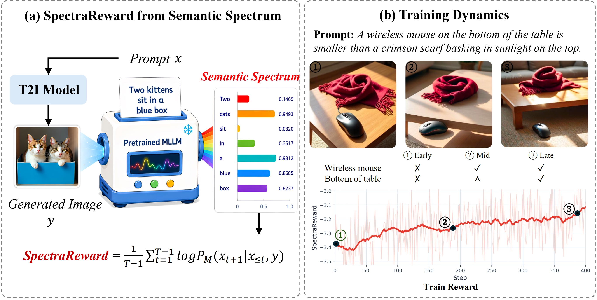
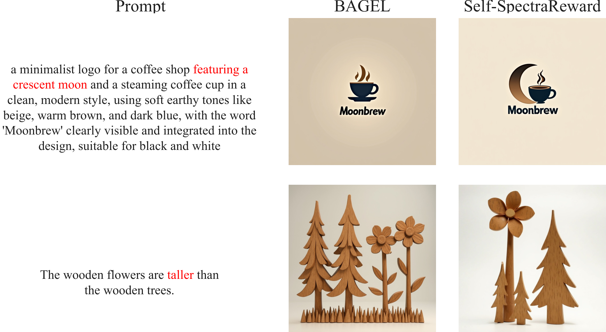
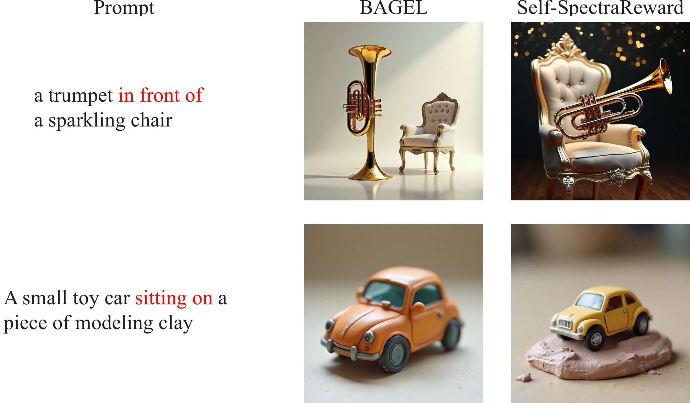
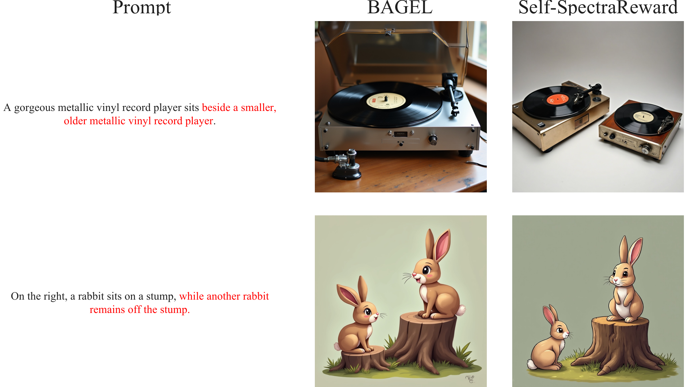
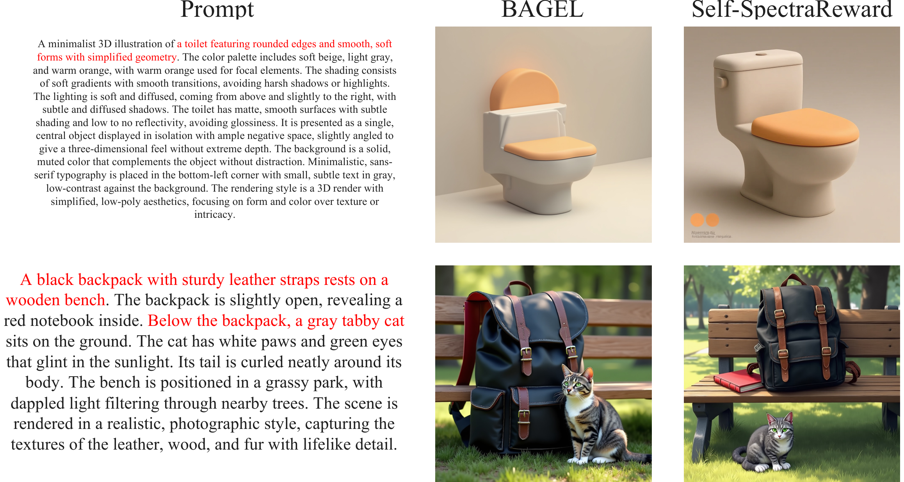
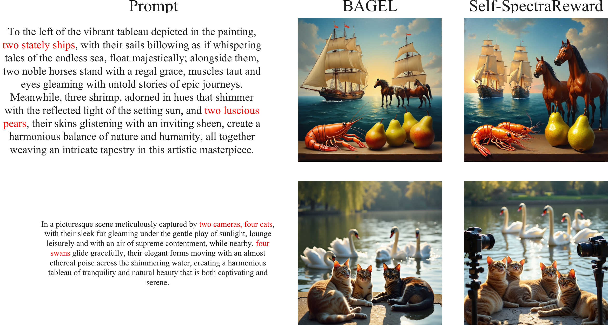
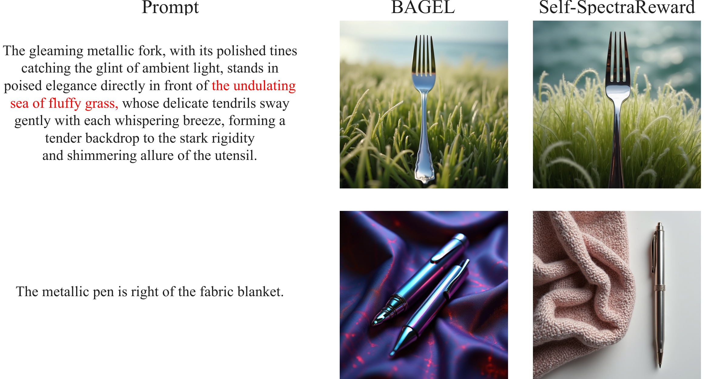
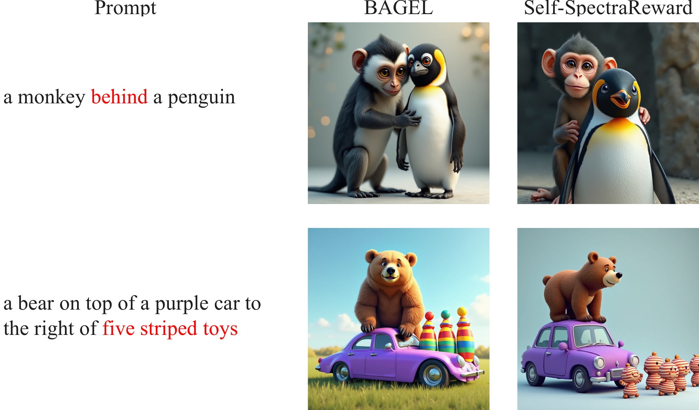
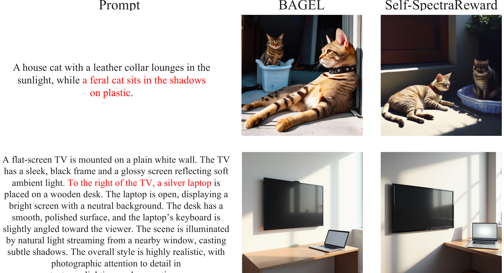
We propose SpectraReward, a training-free reward function that turns pretrained MLLMs into off-the-shelf reward models for image-generation reinforcement learning. Instead of asking the MLLM to judge a generated image or answer decomposed verification questions, SpectraReward measures how well the original prompt can be recovered from the generated image through a single image-conditioned, teacher-forced forward pass.
We use the average image-conditioned prompt log-likelihood as the reward, directly reusing the MLLM's pretrained image-text alignment ability without preference labels or reward-model fine-tuning. We further introduce Self-SpectraReward, a special case for unified multimodal models where the policy's own understanding branch serves as the reward model for its generation branch.
Compute image-conditioned prompt log-likelihood with one teacher-forced MLLM forward pass. No preference labels, no reward-model fine-tuning, and no question decomposition.
For BAGEL-like unified multimodal models, the policy's own understanding branch scores samples from the generation branch, yielding a naturally aligned self-reward without any external model.
Across MLLM families and sizes, reward-policy alignment can rival or surpass raw reward-model scale; the policy's own understanding branch can outperform larger external MLLMs.
SpectraReward asks a simple inverse question: how well can the generated image be read back into its prompt? We condition a frozen MLLM on the generated image y, run a single teacher-forced pass over the prompt tokens x, and use the mean prompt-token log-likelihood as the reward — the most direct signal from MLLM pretraining.
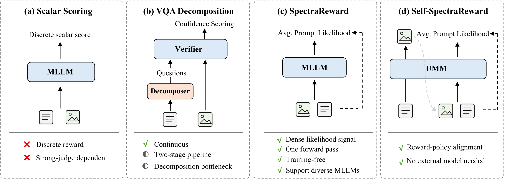
SpectraReward and Self-SpectraReward. SpectraReward computes image-conditioned prompt likelihood through a single teacher-forced pass. Self-SpectraReward instantiates the same reward inside a unified multimodal model by using the policy's own understanding branch.
Pretrained MLLMs can be turned into rewards in several ways. Prior approaches either ask the MLLM to judge an image or to answer decomposed questions; SpectraReward instead reads the prompt back from the image, reusing the MLLM's own image-conditioned language-modeling objective.
Prompt the MLLM to rate image-text alignment on a 1–5 scale. The reward is discrete and highly sensitive to judge calibration — it lowers GenEval by 6.3 versus the baseline.
Decompose the prompt into atomic yes/no questions and aggregate P(yes) (e.g. AlphaGRPO's DVReward). Continuous, but needs a two-stage pipeline and a decomposition bottleneck, and gains stay marginal.
Use the image-conditioned prompt log-likelihood from a single teacher-forced pass. A dense, training-free signal that works across MLLM families and is best on every metric.
Instantiate the same reward inside a UMM using its own understanding branch — no external reward model, and reward-policy alignment by construction.
| Reward function | GenEval ↑ | TIIF-Short ↑ | TIIF-Long ↑ |
|---|---|---|---|
| BAGEL (no RL) | 84.0 | 75.2 | 78.6 |
| Scalar Scoring (1–5) | 77.7 | 67.5 | 76.0 |
| VQA-Score (P(yes)) | 83.1 | 77.4 | 78.9 |
| Prompt Likelihood (ours) | 89.5 | 85.1 | 84.3 |
Token-level prompt likelihoods form a semantic spectrum of an image-text pair. Drops in token likelihood localize which prompt requirements are weakly supported by the generated image, while the sequence average gives a stable scalar reward.
In unified multimodal models, the understanding and generation branches share tokenizer, vision encoder, and pretraining distribution. This makes the policy's own understanding branch a calibrated reward source for its generated-image distribution.
Before benchmarking downstream RL, we verify that the prompt-likelihood signal is a reliable reward: it localizes semantic errors and ranks rollouts within a prompt group.
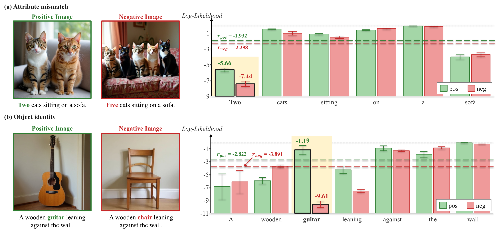
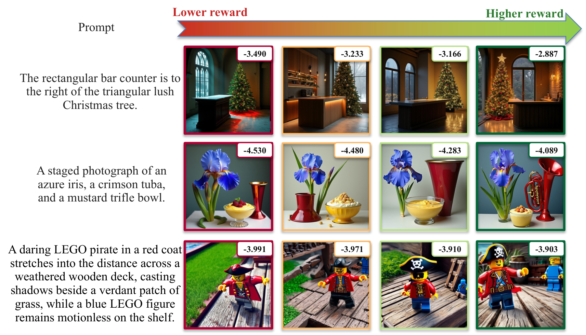
SpectraReward is evaluated across text-to-image backbones, RL algorithms, reward MLLM families, and out-of-distribution benchmarks.
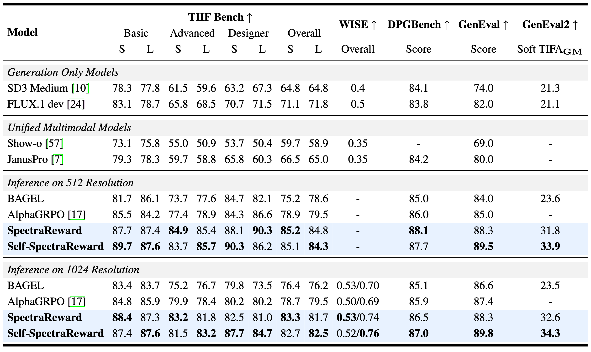
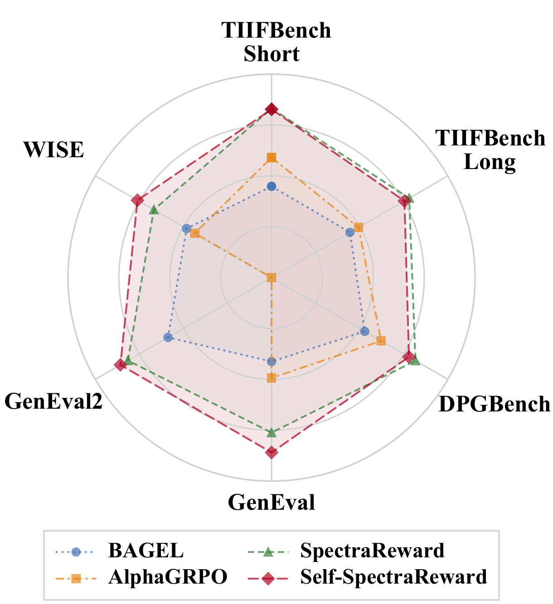
Which MLLM should serve as the reward model, and how does it interact with the RL algorithm?
SpectraReward works with diverse off-the-shelf MLLMs. On both SD3.5-M and BAGEL, and across the Gemma3, InternVL3.5, and Qwen3-VL families, it consistently improves the baseline — the prompt-likelihood reward is architecture-agnostic.
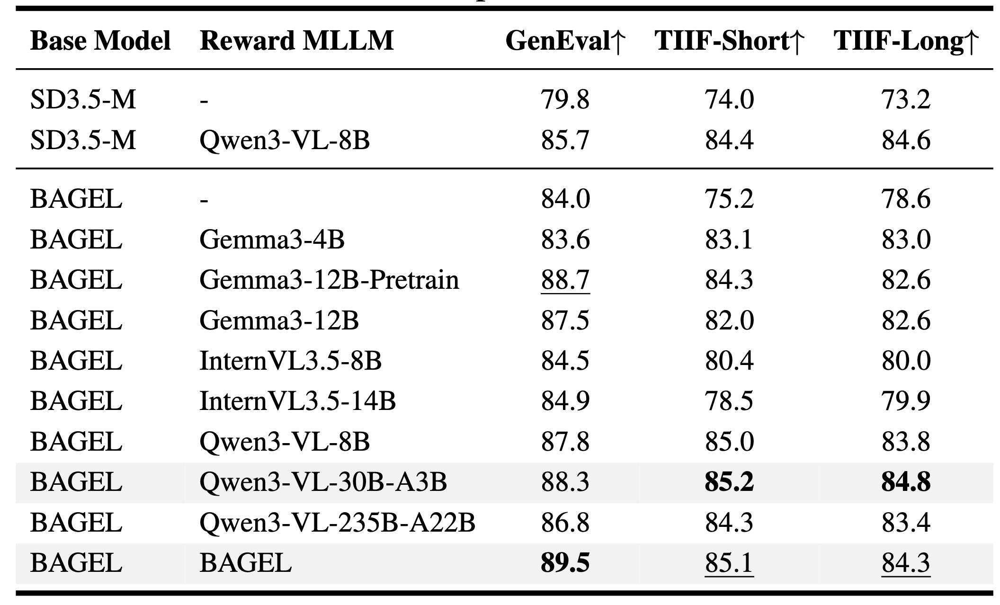
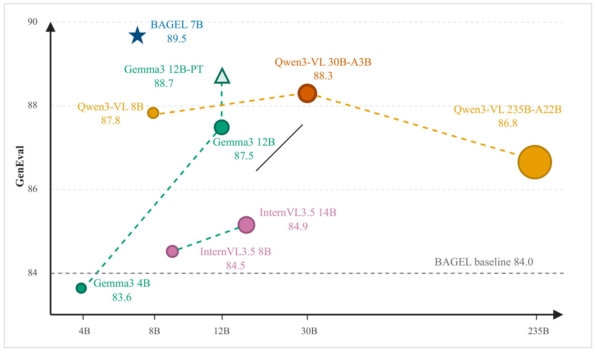
Self-SpectraReward reaches the best GenEval (89.5), matching the strongest 30B-class external reward and surpassing the 30× larger Qwen3-VL-235B-A22B. Reward quality is not determined by scale alone.
Within Qwen3-VL, 8B→30B improves every metric but 235B drops, so a ~30B MLLM already unlocks most of the benefit. And Gemma3-12B-Pretrain beats its Instruct counterpart, since captioning-style pretraining better matches SpectraReward's objective.
Holding the reward fixed to Self-SpectraReward, AWM is the most effective optimizer over FlowGRPO and DiffusionNFT. Under comparable RL training, Self-SpectraReward also outperforms prior preference-based and MLLM-derived rewards — HPSv3, UnifiedReward, VIEScore, and AlphaGRPO's DVReward.
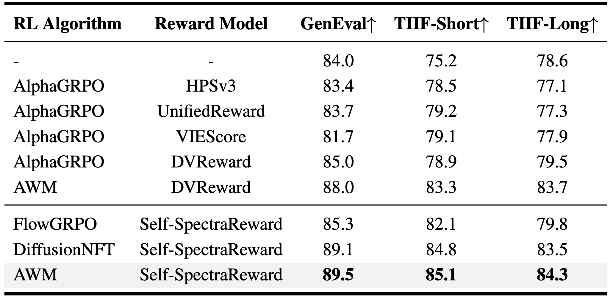
@article{huang2026spectrareward,
title={Read It Back: Pretrained MLLMs Are Zero-Shot Reward Models for Text-to-Image Generation},
author={Huang, Runhui and Zhang, Qihui and Liu, Zhe and Gao, Yu and Wu, Jie and Zhao, Hengshuang},
journal={arXiv preprint arXiv:XXXX.XXXXX},
year={2026}
}